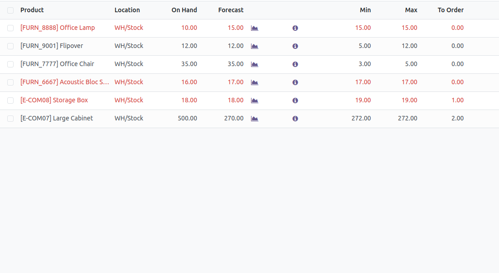

inventory Stock
Stay Ahead with Automated Low Stock Notifications in Inventory Management Effortlessly monitor product availability with the Low Stock Notification module for Odoo Inventory. Integrated directly into your stock management workflow, this module enables real-time tracking of on-hand and forecasted quantities. Receive automated alerts when product quantities drop below configured thresholds — whether globally, individually, or through reordering rules. Take proactive actions, reduce stockouts, and optimize procurement with confidence. Designed to support smarter inventory decisions, this module ensures you're always informed and ready to replenish critical stock — keeping your supply chain smooth and efficient.
Features
Real-Time Stock Monitoring
Track product availability in real-time based on on-hand or forecasted quantities directly in the Inventory app. Stay informed with up-to-date stock levels and act proactively.
Global & Individual Minimum Quantity
Define a universal minimum quantity for all products using the global setting, or set specific minimum thresholds per product for more granular control.
Low Stock Indicators
Get notified when stock drops below predefined thresholds. The module supports both individual and global settings, making monitoring more flexible and efficient.
Automatic Email Alerts
Automatically send low stock email notifications to the responsible users when inventory falls below configured limits. Stay alert and never miss a critical stock update.
Reorder Rule Support
Automatically detect low stock using On Hand or Forecasted quantities and trigger reordering based on Odoo’s Replenishment rules—supporting both manual and automated workflows.
Inventory Settings
Here you can select quantity type
Here you can select product quantity check
in product quantity check when you select global you must have set minimum quantity
Inventory Set Minimum Quantity for individual Products
Select the quantity type (Forecasted or On Hand) and choose whether to apply individual product quantity checks.
Then enable option to set minimum quantity for individual products
Replenishment
Easily reorder low stock items using the Replenishment option under Operations in Inventory. View products in Kanban view for a visual restocking experience.

Easily reorder low stock items using the Replenishment option under Operations in Inventory. View products in List view for a quick tabular overview.
Email Template
Automatically sends an email notification listing all low stock products when stock levels fall below the configured threshold. Notifications are triggered based on the selected condition — whether using On Hand, Forecasted, or Reorder Rule quantities — ensuring timely alerts and smarter inventory decisions.